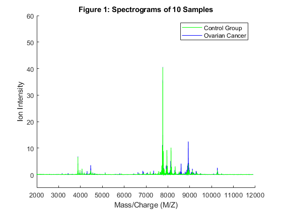
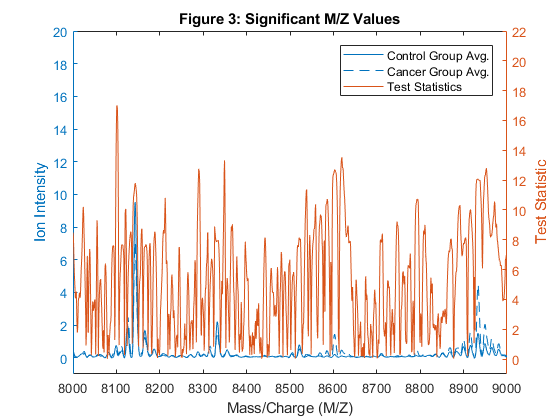

Example of proteomics in cancer biology with Matlab
Contents
Summary
This report represents a represents an example Matlab proteomic data analysis. The data set analyze in this report can be found here which is the FDA-NCI Clinical Proteomics Program Databank. The samples downloaded from the FDA-NIC Proteomics Programa Databank corresponds to SELDI Mass-Spec profiles of overian cancer samples: Cancer Group vs Normal Group. The study related to this dataset was published, in 2004, the Endocrine Related Cancer journal.
Loading pre-processed dataset
After preprocessing the dataset (find the code here, the dataset was loaded.
load OvarianCancerQAQCdataset
whos
Name Size Bytes Class Attributes Cidx 216x1 216 logical Cvec 121x1 968 double MZ 15000x1 120000 double N 1x1 8 double Nidx 216x1 216 logical NumberCancerDatasets 1x1 8 double NumberNormalDatasets 1x1 8 double Nvec 95x1 760 double Y 15000x216 25920000 double ans 1x10 80 double feat 100x1 800 double files 1x216 32400 cell filesCancer 121x1 113519 struct filesNormal 95x1 89209 struct grp 216x1 26784 cell hC 10x1 0 matlab.graphics.chart.primitive.Line hN 10x1 0 matlab.graphics.chart.primitive.Line max_C 15000x1 120000 double max_N 15000x1 120000 double mean_C 15000x1 120000 double mean_N 15000x1 120000 double min_C 15000x1 120000 double min_N 15000x1 120000 double repository 1x85 170 char repositoryC 1x92 184 char repositoryN 1x92 184 char sig_Masses 100x1 800 double stat 15000x1 120000 double xAxisLabel 1x17 34 char yAxisLabel 1x13 26 char
Initializing variables
A set of vector variables, which will be used in the downstream workflow, are initialized.
N = numel(grp); % vector of number of samples Cidx = strcmp('Cancer',grp); % logical index vector for Cancer samples Nidx = strcmp('Normal',grp); % logical index vector for Normal samples Cvec = find(Cidx); % index vector for Cancer samples Nvec = find(Nidx); % index vector for Normal samples xAxisLabel = 'Mass/Charge (M/Z)'; % x-axis label for plots yAxisLabel = 'Ion Intensity'; % y-axis label for plots
Visualizing a set of the samples
The spectogram of 10 samples
figure; hold on; hC = plot(MZ,Y(:,Cvec(1:10)),'b'); hN = plot(MZ,Y(:,Nvec(1:10)),'g'); xlabel(xAxisLabel); ylabel(yAxisLabel); axis([2000 12000 -5 60]) legend([hN(1),hC(1)],{'Control Group','Ovarian Cancer'}) title('Spectrograms of 10 Samples') figure; hold on; hC = plot(MZ,Y(:,Cvec(1:10)),'b'); hN = plot(MZ,Y(:,Nvec(1:10)),'g'); xlabel(xAxisLabel); ylabel(yAxisLabel); axis([8000 9000 -1 7]) legend([hN(1),hC(1)],{'Control Group','Ovarian Cancer'}) title('Zoomed Spectrograms of 10 Samples')

Ranking features
% Significant masses using a two-way t-statistic [feat,stat] = rankfeatures(Y,grp,'CRITERION','ttest','NUMBER',100); sig_Masses = MZ(feat); sig_Masses(1:10)' %display the first 10 significant masses % Set variables for two-way t-statistic plotting mean_N = mean(Y(:,Nidx),2); % group average for control samples max_N = max(Y(:,Nidx),[],2); % top envelopes of the control samples min_N = min(Y(:,Nidx),[],2); % bottom envelopes of the control samples mean_C = mean(Y(:,Cidx),2); % group average for cancer samples max_C = max(Y(:,Cidx),[],2); % top envelopes of the control samples min_C = min(Y(:,Cidx),[],2); % bottom envelopes of the control samples % Plotting the two-way t-statistic figure; yyaxis left plot(MZ, [mean_N mean_C]); ylim([-1,20]) xlim([8000,9000]) title('Significant M/Z Values') xlabel(xAxisLabel); ylabel(yAxisLabel); yyaxis right plot(MZ,stat); ylim([-1,22]) ylabel('Test Statistic'); legend({'Control Group Avg.','Cancer Group Avg.', 'Test Statistics'})
ans =
1.0e+03 *
Columns 1 through 7
8.1009 8.1016 8.1024 8.1001 8.1032 7.7366 7.7359
Columns 8 through 10
7.7374 7.7253 7.7245
